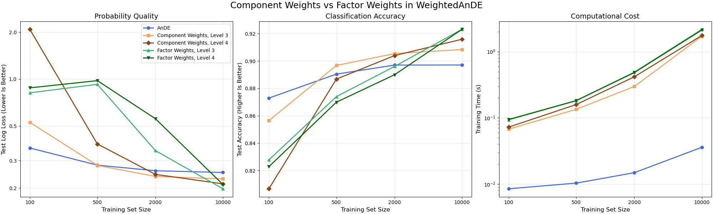

Note
Go to the end to download the full example code.
Component or Factor Weights: Data Efficiency and Cost#
skbn.WeightedAnDE learns discriminative weights on top of AnDE.
weight_scope decides what a weight multiplies:
"component": a whole SPODE. At level 3 there is one weight per SPODE and class; at level 4, one per SPODE, class and value of its super-parent. There are few weights, and they only decide how much each SPODE is trusted."factor": each factor inside each SPODE, as in the weighted CCBN of Zaidi et al. (2017). Level 3 adds the value of the attribute and the class; level 4 also the value of the super-parent. These weights can discount an attribute that the SPODEs count several times.
The Scenario: Ten attributes, four of them redundant linear combinations of the informative ones. The models are trained on increasing sample sizes.
Observations:
Small N (100): AnDE leads. The hybrids overfit, and the more weights they have, the more they do.
Medium N (500-2000): Component weights match or beat AnDE, while factor weights still lag behind.
Large N (10000): Factor weights give the lowest log loss and the highest accuracy. Component weights cannot undo the redundancy, which every SPODE shares.
Time: Every model trains in a few seconds. Factor weights cost somewhat more than component weights.

Seed 1 done.
Seed 2 done.
Seed 3 done.
AnDE log loss [0.362 0.281 0.258 0.252]
Component Weights, Level 3 log loss [0.528 0.28 0.238 0.229]
Component Weights, Level 4 log loss [2.087 0.384 0.245 0.213]
Factor Weights, Level 3 log loss [0.817 0.927 0.347 0.198]
Factor Weights, Level 4 log loss [0.879 0.978 0.557 0.211]
# Author: The scikit-bayes Developers
# SPDX-License-Identifier: BSD-3-Clause
import time
import matplotlib.pyplot as plt
import numpy as np
from matplotlib.ticker import NullLocator, ScalarFormatter
from sklearn.datasets import make_classification
from sklearn.metrics import accuracy_score, log_loss
from sklearn.model_selection import train_test_split
from skbn import AnDE, WeightedAnDE
seeds = [1, 2, 3]
sizes = [100, 500, 2000, 10000]
# Name, factory, colour, marker
models_config = [
("AnDE", lambda: AnDE(n_dependence=1), "royalblue", "o"),
(
"Component Weights, Level 3",
lambda: WeightedAnDE(weight_level=3, l2_reg=1e-3),
"sandybrown",
"s",
),
(
"Component Weights, Level 4",
lambda: WeightedAnDE(weight_level=4, l2_reg=1e-3),
"saddlebrown",
"D",
),
(
"Factor Weights, Level 3",
lambda: WeightedAnDE(weight_scope="factor", weight_level=3, l2_reg=1e-3),
"mediumseagreen",
"^",
),
(
"Factor Weights, Level 4",
lambda: WeightedAnDE(weight_scope="factor", weight_level=4, l2_reg=1e-3),
"darkgreen",
"v",
),
]
# Results: [seed, size, model]
shape = (len(seeds), len(sizes), len(models_config))
res_ll, res_acc, res_time = np.zeros(shape), np.zeros(shape), np.zeros(shape)
for i, seed in enumerate(seeds):
X, y = make_classification(
n_samples=15000,
n_features=10,
n_informative=4,
n_redundant=4,
random_state=seed,
)
for j, n_train in enumerate(sizes):
X_train, X_test, y_train, y_test = train_test_split(
X, y, train_size=n_train, test_size=5000, random_state=seed
)
for k, (_, factory, _, _) in enumerate(models_config):
start = time.perf_counter()
clf = factory().fit(X_train, y_train)
res_time[i, j, k] = time.perf_counter() - start
proba = clf.predict_proba(X_test)
res_ll[i, j, k] = log_loss(y_test, proba)
res_acc[i, j, k] = accuracy_score(y_test, proba.argmax(axis=1))
print(f"Seed {seed} done.")
mean_ll, mean_acc, mean_time = (r.mean(axis=0) for r in (res_ll, res_acc, res_time))
for k, (name, _, _, _) in enumerate(models_config):
print(f"{name:28s} log loss {np.round(mean_ll[:, k], 3)}")
# --- Visualization ---
fig, axes = plt.subplots(1, 3, figsize=(20, 6), layout="constrained")
panels = [
(mean_ll, "Test Log Loss (Lower Is Better)", "Probability Quality"),
(mean_acc, "Test Accuracy (Higher Is Better)", "Classification Accuracy"),
(mean_time, "Training Time (s)", "Computational Cost"),
]
for ax, (values, ylabel, title) in zip(axes, panels):
for k, (name, _, color, marker) in enumerate(models_config):
ax.plot(sizes, values[:, k], marker=marker, color=color, lw=2, label=name)
ax.set_ylabel(ylabel, fontsize=12)
ax.set_title(title, fontsize=14)
ax.set_xlabel("Training Set Size", fontsize=12)
ax.set_xscale("log")
ax.set_xticks(sizes)
ax.get_xaxis().set_major_formatter(ScalarFormatter())
ax.xaxis.set_minor_locator(NullLocator())
ax.grid(True, alpha=0.3)
axes[0].set_yscale("log")
axes[0].set_yticks([0.2, 0.3, 0.5, 1.0, 2.0])
axes[0].yaxis.set_major_formatter(ScalarFormatter())
axes[0].yaxis.set_minor_locator(NullLocator())
axes[2].set_yscale("log")
axes[0].legend(fontsize=10)
fig.suptitle("Component Weights vs Factor Weights in WeightedAnDE", fontsize=18)
plt.show()
Total running time of the script: (0 minutes 34.679 seconds)